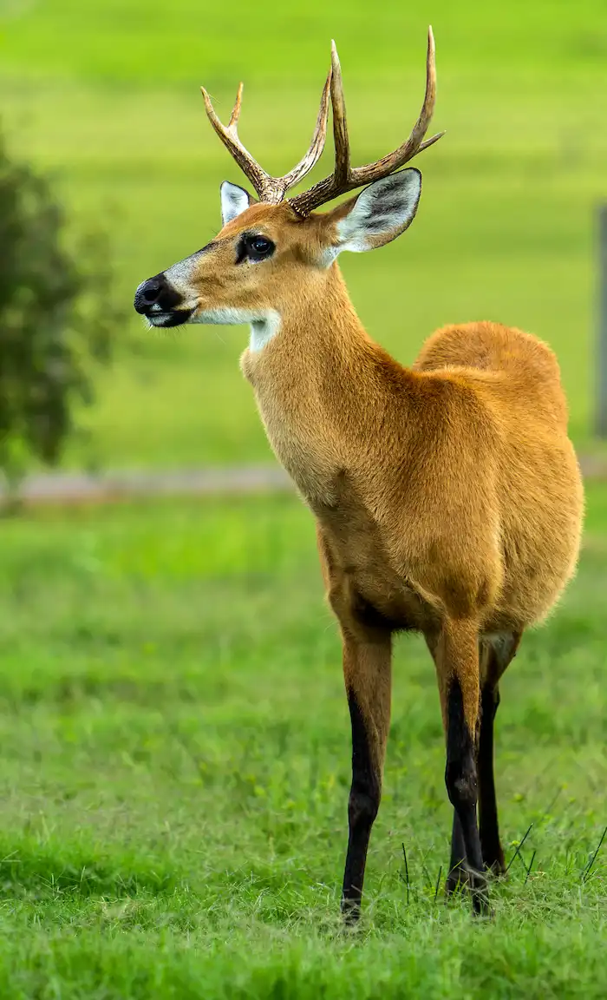
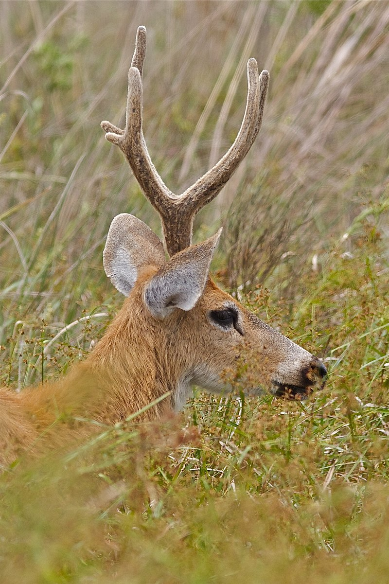

Cervo do pantanal da família cervídeos
A caça excessiva e a perda de habitat têm reduzido drasticamente a população. A maior parte da população vive no Pantanal e na Ilha do Bananal, em Tocantins. A construção de grandes barragens também tem contribuído para a redução da população devido à eliminação de áreas de várzea. A família Cervidae, representada por cervos e veados, é a única ruminante nativa existente na América do Sul. Os machos possuem chifres que caem e voltam a crescer a cada ano e, nas espécies que apresentam galhadas, as ramificações vão aumentando gradualmente a partir do primeiro ano.
O cervo-do-pantanal é o maior veado da América do Sul, com quase 200 cm de comprimento e até 2,1 metros de altura, incluindo os chifres, que medem de 40 a 45 cm. Os machos podem chegar a pesar 130 kg.
Originalmente, a espécie ocorria desde o sul do rio Amazonas até o norte da Argentina, habitando grandes áreas no Brasil central, no Peru, na Bolívia e no Paraguai, porém suas populações foram drasticamente reduzidas. Atualmente, ocorre apenas em algumas manchas pelo país, sendo mais abundante no Pantanal e na Ilha do Bananal, em Tocantins. Em geral, vive em áreas pantanosas e em savanas sazonalmente inundadas. Evita florestas e seleciona áreas entre 30 e 60 cm de profundidade.
No Pantanal, eles se dispersam na cheia e concentram-se perto de rios e áreas alagadas na seca. Possuem hábitos diurnos, com picos de atividade no início da manhã e final da tarde, evitando horários mais quentes. Porém, podem mudar seus hábitos para noturnos em regiões mais antropizadas, nas quais há a pressão de caçadores. Saltam com grande desenvoltura e nadam bem, podendo atravessar grandes rios. As fêmeas formam pequenos grupos familiares e os machos são mais solitários.
“É a maior espécie de cervídeo das Américas e o único representante de seu gênero, e em breve não existirão mais por conta de nós humanos”
- Status de conservação: Vulnerável
- Tipo: Mamífero
- Idade Média: 20 anos
- Macho adulto: 130kg
- Fêmea adulta: 100kg
- Família: Cervidae
Alimenta-se, principalmente, de gramíneas e plantas aquáticas e semi-aquáticas. Onças-pintadas, onças-pardas e sucuris podem predar cervos adultos, e o lobo-guará pode predar os seus filhotes.
O tempo médio de gestação é de 271 dias. No Pantanal, nascimentos concentram-se entre maio e julho, quando o nível das águas está na vazante. Nasce um único filhote que pesa, em média, 4 ou 5 kg e, em menos de 5 dias, ele está seguindo a mãe. Na maioria dos cervídeos, filhotes nascem manchados, mas filhotes de cervos-do-pantanal nascem com a pelagem semelhante à dos adultos.